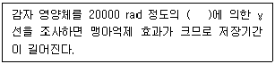
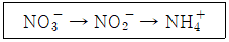
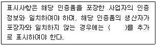
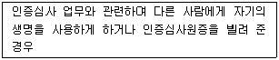
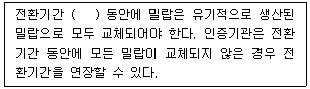
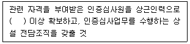

유기농업기사 (2022-03-05 기출문제)
1과목: 재배원론
1. 우리나라 원산지인 작물로만 나열된 것은?
- 감, 인삼
- 벼, 참깨
- 담배, 감자
- 고구마, 옥수수
(정답률: 77%)

2. 다음 중 식물학상 과실로 과실이 나출된 식물은?
- 벼
- 겉보리
- 쌀보리
- 귀리
(정답률: 40%)
3. 뿌림골을 만들고 그곳에 줄지어 종자를 뿌리는 방법은?
- 산파
- 점파
- 적파
- 조파
(정답률: 94%)
4. 노후답의 재배대책으로 가장 거리가 먼 것은?
- 저항성 품종을 선택한다.
- 조식재배를 한다.
- 무황산근 비료를 시용한다.
- 덧거름 중점의 시비를 한다.
(정답률: 55%)
5. 작물의 수해에 대한 설명으로 옳은 것은?
- 수온이 높은 것이 낮은 것에 비하여 피해가 심하다.
- 유수가 정체수보다 피해가 심하다.
- 벼 분얼초기는 다른 생육단계보다 침수에 약하다.
- 화본과 목초, 옥수수는 침수에 약하다.
(정답률: 50%)
6. 고무나무와 같은 관상수목을 높은 곳에서 발근시켜 취목하는 영양번식 방법은?
- 삽목
- 분주
- 고취법
- 성토법
(정답률: 94%)
7. ( ) 에 알맞은 내용은?

- 13C
- 17C
- 60Co
- 52K
(정답률: 84%)
8. 다음 중 땅속줄기(지하경)로 번식하는 작물은?
- 마늘
- 생강
- 토란
- 감자
(정답률: 70%)
9. 다음 중 T/R율에 대한 설명으로 옳은 것은?
- 감자나 고구마의 경우 파종기나 이식기가 늦어질수록 T/R율이 작아진다.
- 일사가 적어지면 T/R율이 작아진다.
- 토양함수량이 감소하면 T/R율이 감소한다.
- 질소를 다량시용하면 T/R율이 작아진다.
(정답률: 77%)
10. 식물체의 부위 중 내열성이 가장 약한 곳은?
- 완성엽(完成葉)
- 중심주(中心柱)
- 유엽(幼葉)
- 눈(芽)
(정답률: 75%)
11. 다음 중 침수에 의한 피해가 가장 큰 벼의 생육 단계는?
- 분얼성기
- 최구분얼기
- 수잉기
- 고숙기
(정답률: 93%)
12. 화성유도 시 저온·장일이 필요한 식물의 저온이나 장일을 대신하여 사용하는 식물호르몬은?
- CCC
- 에틸렌
- 지베렐린
- ABA
(정답률: 73%)
13. 다음 중 단일식물에 해당하는 것으로만 나열된 것은?
- 양파, 상추
- 샐비어, 콩
- 시금치, 양귀비
- 아마, 감자
(정답률: 42%)
14. 순무의 착색에 관계하는 안토시안의 생성을 가장 조장하는 광파장은?
- 적색광
- 녹색광
- 적외선
- 자외선
(정답률: 36%)
15. 광합성에서 C4 작물에 속하지 않는 것은?
- 사탕수수
- 옥수수
- 벼
- 수수
(정답률: 85%)
16. 다음 중 작물의 주요온도에서 최적온도가 가장 낮은 작물은?
- 옥수수
- 완두
- 보리
- 벼
(정답률: 62%)
17. 등고선에 따라 수로를 내고, 임의의 장소로부터 월류하도록 하는 방법은?
- 등고선관개
- 보더관개
- 일류관개
- 고랑관개
(정답률: 100%)
18. 벼의 비료 3요소 흡수 비율로 옳은 것은?
- 질소 5 : 인산 1 : 칼륨 1
- 질소 3 : 인산 1 : 칼륨 3
- 질소 5 : 인산 2 : 칼륨 4
- 질소 4 : 인산 2 : 칼륨 3
(정답률: 85%)
19. 앞 작물의 그루터기를 그대로 남겨서 풍식과 수식을 경감시키는 농법은?
- 녹색 필름 멀칭
- 스터블 멀칭
- 볏짚 멀칭
- 투명 필름 멀칭
(정답률: 93%)
20. 녹체춘화형 식물로만 나열된 것은?
- 완두, 잠두
- 봄무, 잠두
- 사리풀, 양배추
- 완두, 추파맥류
(정답률: 79%)
2과목: 토양비옥도 및 관리
21. 토양 중에 서식하는 조류(藻類)의 역할로 가장 거리가 먼 것은?
- 사상균과 공생하여 지의류 형성
- 유기물의 생성
- 산소 공급
- 산성토양을 중성으로 개량
(정답률: 59%)
22. 토양의 입자밀도가 2.60g/cm3 이라 하면 용적밀도가 1.17g/cm3 인 토양의 고상 비율은?
- 40%
- 45%
- 50%
- 55%
(정답률: 55%)
23. 식물 세포벽을 구성하는 유기물 구성 성분 중 분해속도가 가장 느리며 아직도 그 구조가 완전히 밝혀지지 않은 물질은?
- 셀룰로오스
- 단백질
- 리그닌
- 지방류
(정답률: 80%)
24. 토양에 질소성분 100kg을 시비한 작물로 흡수된 질소 양이 50kg이었고, 시비하지 않은 토양에서 작물이 20kg의 질소를 흡수하였다. 이 작물의 질소비료 이용 효율은?
- 20%
- 30%
- 50%
- 70%
(정답률: 72%)
25. 표층에서 용탈된 점토가 B층에 집적되며 주요 감식토층이 argillic 차표층인 토양목은?
- Alfisol
- Vertisol
- Andisol
- Entisol
(정답률: 50%)
26. 토양미생물의 질소대사 작용 중 다음과 같은 작용을 무엇이라고 하는가?

- 질산화작용
- 암모니아화성작용
- 탈질작용
- 질산환원작용
(정답률: 50%)
27. 토양분석결과 교환성 K+ 이온이 0.4 cmolc/kg 이었다면, 이 토양 1kg 속에는 몇 g의 교환성 K+ 이온이 들어있는가? (단, K의 원자량은 39로 한다.)
- 0.078g
- 0.156g
- 0.234g
- 0.312g
(정답률: 72%)
28. 토양의 소성치수를 결과 A 토양은 25이고, B 토양은 20 이었다. 두 토양을 올바르게 비교 설명한 것은?
- A 토양이 B 토양보다 소성상태에서 수분을 많이 보유한다.
- B 토양이 A 토양보다 소성상태에서 총 유기물 함량이 많다.
- A 토양은 B 토양보다 적은 수분량으로 소성상태를 유지한다.
- B 토양은 A 토양보다 점토함량이 많은 토양이다.
(정답률: 47%)
29. 농약과 같은 유기화학물질이 토양에서 용탈되는데 관여하는 인자로 가장 거리가 먼 것은?
- 유기화학물질의 증기압
- 점토 양
- 토양유기물 양
- 유기화학물질의 용해도
(정답률: 59%)
30. 화산회토에 대한 설명으로 적절하지 않은 것은?
- 다공성이다.
- 전용적밀도가 낮다.
- 주요 무기교질은 카올리나이트이다.
- 유기물함량이 높지만 난분해성이다.
(정답률: 69%)
31. 경작지의 유기물 함량을 높이는 방법으로 적절하지 않은 것은?
- 작물의 잔사(residue)를 토양에 돌려준다.
- 토양 침식을 막는다.
- 필요 이상으로 땅을 자주 경운하지 않는다.
- 토양 표면의 녹비작물을 제거한다.
(정답률: 86%)
32. 토양에 대한 설명으로 틀린 것은?
- 토양에서 전토층(regolith)과 진토층(solum)의 차이는 전토층은 C층을 포함한다는 점이다.
- 토양이라고 부를 수 있는 최소 단위의 토양 표본은 페돈(pedon)이라고 일컫는다.
- 토양 3상의 구성 비율 중 고상의 비율이 높은 토양은 뿌리의 자람이 쉬우나 식물을 지지하는 힘은 약해진다.
- 우리나라의 토양의 모암은 대부분 화강암 및 화강편마암 계통이다.
(정답률: 67%)
33. 다음 미생물 중 산성토양에서도 잘 생육하는 것은?
- Mucor
- Streptosporangium
- Micromonospora
- Nocaridia
(정답률: 50%)
34. 황상칼륨 비료에는 어떤 원소가 들어 있는가?
- K, O, S
- C, O, K
- C, K, S
- H, S, K
(정답률: 59%)
35. 1차 광물의 풍화에 대한 안정성이 큰 순서대로 나열한 것은?
- 석영＞운모＞각섬석＞감람석
- 운모＞석영＞감람석＞각섬석
- 각섬석＞감람석＞석영＞운모
- 감람석＞각섬석＞운모＞석영
(정답률: 62%)
36. 주요 화성암 중 심성암이면서 염기성암인 것은?
- 반려암
- 화강암
- 유문암
- 안산암
(정답률: 60%)
37. 토양 중 수소이온(H+)이 생성되는 원인으로 틀린 것은?
- 탄산과 유기산의 분해에 의한 수소이온 생성
- 질산화작용에 의한 수소이온 생성
- 교환성염기의 집적에 의한 수소이온 생성
- 식물 뿌리에 의한 수소이온 생성
(정답률: 50%)
38. 토양의 구조 가운데 작물생육에 가장 적합한 구조는?
- 입단구조
- 단립(單立)구조
- 주상구조
- 판상구조
(정답률: 77%)
39. 토양입자와의 결합력이 작아 용탈되기 가장 쉬운 성분은?
- Ca2+
- Mg2+
- PO43-
- NO3-
(정답률: 67%)
40. 습도가 높은 대기 중에 토양을 놓아두었을 때 대기로부터 토양에 흡착되는 수분으로서 –3.1MPa 이하의 포텐셜을 갖는 것은?
- 흡습수
- 모관수
- 중력수
- 지하수
(정답률: 70%)
3과목: 유기농업개론
41. 친환경농업에 해당되지 않는 것은?
- 녹색혁명농업
- 생명동태농업(Bio-dynamic농업)
- IPM(Itegrated Pest Management)
- 유기농업
(정답률: 67%)
42. 녹비작물의 토양 혼입과 관련한 설명으로 옳은 것은?
- 녹비작물의 수확적기는 종실의 완숙기이다.
- 녹비작물의 토양 내 분해속도는 늙은 시기에 수확한 것이 어린 시기에 수확한 것보다 빠르다.
- 녹비작물을 완숙기에 수확했다면 길게 절단하여 토양에 혼힙하는 것이 좋다.
- 녹비작물을 토양에 혼입한 후 후작물을 파종하는 시기는 혼입 후 2~3주 이내가 좋다.
(정답률: 42%)
43. 유기종자의 조건으로 거리가 먼 것은?
- 병충해 저항성이 높은 종자
- 화학비료로 전량 시비하여 재배한 작물에서 채종한 종자
- 농약으로 종자 소독을 하지 않은 종자
- 유기농법으로 재배한 작물에서 채종한 종자
(정답률: 77%)
44. 답전윤환의 효과로 틀린 것은?
- 벼를 재배하다가 채소를 재배하면 채소의 기지현상이 회피된다.
- 담수상태와 배수상태가 서로 교체되므로 잡초발생이 감소된다.
- 입단화가 되고 건토효과가 진전되어 미량원소 등이 용탈된다.
- 밭 기간 동안에는 논 기간에 비하여 환원성이 유해물질의 생성이 억제된다.
(정답률: 59%)
45. 시설토양의 염류집적의 원인이 아닌 것은?
- 과도한 화학비료의 사용
- 강우의 차단과 특이한 실내환경
- 모세관작용에 의한 지하염류의 상승으로 지표면에 염류 축적
- 인공관수에 의한 염류의 지하용탈 및 지표유실의 빈번
(정답률: 70%)
46. 건답직파의 특성이 아닌 것은?
- 비가 올 때에는 파종이 어렵다.
- 담수직파보다 잡초 발생량이 적다.
- 담수직파보다 출아일수가 길다.
- 도복 발생량이 감소한다.
(정답률: 58%)
47. 유기사료 중 조사료에 해당하지 않는 것은?
- 사일리지
- 건초
- 볏짚
- 옥수수
(정답률: 59%)
48. 유기축산을 위한 축사시설 준비 과정에서 중요하게 고려해야 할 사항으로 틀린 것은?
- 채광이 양호하도록 설계하여 건강한 성장을 도모한다.
- 공기의 유입이나 통풍이 양호하도록 설계하여 호흡기 질병이나 먼지 피해를 입지 않도록 한다.
- 가축의 분뇨가 외부로 유출되거나 토양에 침투되어 악취 등의 위생문제 및 지하수 오염 등을 일으키지 않도록 한다.
- 축사건립에 많은 투자를 피하고, 좁은 면적에 다수의 가축을 밀집 사육시킴으로서 경영의 효율성을 제고한다.
(정답률: 87%)
49. 다음 중 고립상태일 때의 광포화점이 가장 낮은 것은?
- 사탕무
- 콩
- 고구마
- 밀
(정답률: 42%)
50. 인공광에서 “수은등”에 대한 설명으로 가장 적절한 것은?
- 고압의 수은 증기 속의 아크방전에 의해서 빛을 내는 전등이다.
- 각종 금속 용화물이 증기압 중에 방전함으로써 금속 특유의 발광을 나타내는 현상을 이용한 등이다.
- 나트륨 증기 속에서 아크방전에 의해 방사되는 빛을 이용한 등이다.
- 반도체의 양극에 전압을 가해 식물생육에 필요한 특수한 파장의 단색광만을 방출하는 인공광원이다.
(정답률: 86%)
51. 토양미생물의 작용에 대한 설명으로 틀린 것은?
- 식물과 상호영향을 끼치며 번식, 생존해 간다.
- 각종 무기물의 흡수와 순환에 중요한 역할을 한다.
- 미생물간의 길항작용을 한다.
- 병해를 일으키지는 않고 예방작용만 한다.
(정답률: 73%)
52. 마늘의 저온저장방법으로 가장 적절한 것은?
- 저온저장은 –10~-5℃, 상대습도는 약 50% 알맞다.
- 저온저장은 8~10℃, 상대습도는 약 85%가 알맞다.
- 저온저장은 3~5℃, 상대습도는 약 65%가 알맞다.
- 저온저장은 3~5℃, 상대습도는 약 85%가 알맞다.
(정답률: 57%)
53. 다음 중 3년생 가지에 결실하는 것은?
- 사과
- 감
- 밤
- 포도
(정답률: 86%)
54. 다음 중 3년 휴작이 필요한 작물로만 나열된 것은?
- 벼, 조
- 딸기, 양배추
- 당근, 미나리
- 토란, 참외
(정답률: 67%)
55. F2~F4 세대에는 매세대 모든 개체로부터 1립씩 채종하여 집단재배를 하고, F4 각 개체별로 F5 계통재배를 하는 것은?
- 여교배육종
- 파생계통육종
- 1개체 1계통육종
- 단순순환선발
(정답률: 84%)
56. 광물성 유기농업자재가 아닌 것은?
- 유지류
- 식염류
- 칼슘염류
- 인산염류
(정답률: 55%)
57. 전류가 텅스텐 필라멘트를 가열할 때 발생하는 빛을 이용하는 등(lamp)은?
- 백열등
- 형광등
- 수은등
- 메탈할라이드등
(정답률: 79%)
58. 염류농도 장해의 가시적 증상이 아닌 것은?
- 새순부터 잎이 마르기 시작한다.
- 잎이 농녹색을 띠기 시작한다.
- 잎 끝이 타면서 말라 죽는다.
- 칼슘과 마그네슘 결핍증이 나타난다.
(정답률: 47%)
59. 다음 중 고온장해에 대한 내용으로 틀린 것은?
- 유기물의 과잉소모
- 증산 억제
- 질소대사의 이상
- 철분의 침전
(정답률: 62%)
60. 유기축산에 사용하는 가축중에서 자축의 수가 평균적으로 가장 많은 가축은?
- 한우
- 젖소
- 돼지
- 염소
(정답률: 77%)
4과목: 유기식품 가공.유통론
61. 전지분유에 대한 설명으로 틀린 것은?
- 충전 시 충분한 냉각이 필요하며, 건조한 곳에서 취급되어야 한다.
- 물에 쉽게 용해될 수 있도록 인스턴트화시켜 탈지분유보다 저장이 용이하다.
- 공기가 통하지 않도록 포장한다.
- 제빵, 제과용으로 많이 사용된다.
(정답률: 60%)
62. 대장균군 검사에 사용되지 않는 배지는?
- 표준한천배지
- 유당배지
- BGLB 배지
- 데스옥시콜레이트 유당한천 배지
(정답률: 65%)
63. 유기농법을 적용할 경우 예상되는 결과와 거리가 먼 것은?
- 화학비료를 사용하지 않아 과용된 비료에 의한 환경오염을 줄일 수 있다.
- 잔류농약으로 인한 위험이 줄어든다.
- 농약과 비료를 사용하지 않아 장기적으로 고품질 농산물의 안정적 생산량 유지가 어렵다.
- 부가가치를 증가시켜 고가로 판매할 수 있어 경쟁력 있는 농업으로 발전할 수 있다.
(정답률: 85%)
64. 식품포장지로 사용되는 골판지에 대한 설명으로 틀린 것은?
- 골의 높이와 골의 수에 따라 A, B, C, D, E, F로 구분된다.
- 골의 높이는 A＞C＞B의 순서로 높다.
- 단위길이당 골의 수가 가장 적은 것은 A이다.
- 골의 형태는 U형과 V형이 있다.
(정답률: 65%)
65. 식품포장재료의 일반적인 구비요건으로 적합하지 않은 것은?
- 식품의 성분과 상호작용이 없어야 한다.
- 유해한 성분을 함유하지 않아야 한다.
- 적정한 물리적 강도를 가지고 있어야 한다.
- 식품 종류와 관계없이 투습도가 높고 기체를 통과시키지 않아야 한다.
(정답률: 75%)
66. 식품의 원료 관리, 제조, 가공, 조리, 소분, 유통, 판매의 모든 과정에서 위해한 물질이 식품에 섞이거나 오염되는 것을 방지하기 위하여 각 과정의 위해요소를 중점적으로 관리하는 기준을 무엇이라 하는가?
- HACCP
- SSOP
- GMP
- GAP
(정답률: 88%)
67. 대두유 또는 난황에서 분리한 인지질 함유 복합지질을 식용에 적합하도록 정제한 것 또는 이를 주원료로 하여 가공한 식품은?
- 레시틴식품
- 배아식품
- 감마리놀렌산식품
- 옥타코사놀식품
(정답률: 54%)
68. 화농성 질환의 병원균으로 독소형 식중독의 원인균은?
- Leuconostoc mesenteroides
- Steptococcus faecalis
- Staphylococcus aureus
- Bacillus coagulans
(정답률: 54%)
69. 농산물 표준규격에 근거하여 토마토의 표준거래단위에 해당되지 않는 것은? (단, 5kg 이상을 기준으로 한다.)
- 5kg
- 7.5kg
- 15kg
- 20kg
(정답률: 84%)
70. 식품의 동결건조의 기본 원리는?
- 승화
- 기화
- 액화
- 응고
(정답률: 60%)
71. 수박 한통의 유통단계별 가격은 농가수취가격 5000원, 위탁상가격 6,000원, 도매가격 6500언, 소비자가격 8,500원이다. 수박 총 거래량이 100개라고 하면, 유통마진의 가치(VMM)는 얼마인가?
- 350000원
- 200000원
- 150000원
- 100000원
(정답률: 79%)
72. 시판되는 우유 제조 시 균질을 하는 주된 이유는?
- 미생물 사멸
- 크림 분리 방지
- 향미의 개선
- 단백질의 콜로이드(colloid)화
(정답률: 50%)
73. 초고압 처리의 미생물 살균 원리와 거리가 먼 것은?
- 세포막 구성단백질의 변성
- 세포생육의 필수아미노산 흡수억제
- 세포막 투과성 억제
- 세포막 누출량 증가
(정답률: 37%)
74. 식품의 기준 및 규격 상의 정의가 틀린 것은?
- 냉동은 –18℃ 이하, 냉장은 0~10℃를 말한다.
- 건조물(고형물)은 원료를 건조하여 남은 고형물로 별도의 규격이 정하여 지지 않은 한, 수분함량이 5% 이하인 것을 말한다.
- 살균이라 함은 따로 규정이 없는 한 세균, 효모, 곰팡이 등 미생물의 영양세포를 불성화시켜 감소시키는 것을 말한다.
- 유통기간이라 함은 소비자에게 판매가 가능한 기간을 말한다.
(정답률: 46%)
75. 농산물 표준화의 잠재적 효용가치가 아닌 것은?
- 마케핑비용의 감소
- 중간상의 이윤을 높임
- 시장 유통활동의 능률화
- 가격형성의 효율화
(정답률: 67%)
76. 청과물의 호흡작용에 가장 크게 영향을 주는 요인은?
- 습도
- 온도
- 빛
- 산소
(정답률: 42%)
77. 농산물의 일반적인 유통경로는?
- 중계 – 분산 - 가공
- 중계 - 분산 - 수집
- 수집 – 중계 - 분산
- 분산 – 가공 – 중계
(정답률: 73%)
78. 식품공장에서 식품을 다루는 작업자의 위생과 관련된 설명으로 틀린 것은?
- 작업장에서 깨끗한 장갑을 착용하는 경우에는 손을 씻지 않아도 된다.
- 일반 작업구역에서 비오염 작업구역으로 이동할 때는 반드시 손을 씻고 소독하여야 한다.
- 신발은 작업 전용 신발을 신어야 하고 같은 신발을 신은 채 화장실에 출입하지 않아야 한다.
- 피부감염, 화농성질환이 있거나 설사를 하는 경우 식품제조 작업에서 제외하여야 한다.
(정답률: 94%)
79. Bacillus polymixa 포자의 D값은 100℃에서 0.5분이며 z값은 9℃이다. 초기 미생물 수가 106인 식품을 109℃에서 0.15분간 가열하였을 때 식품에 잔류하는 미생물의 수는?
- 10
- 102
- 103
- 104
(정답률: 74%)
80. 유기식품의 품질보증, 구매 후 서비스, 반품 등은 제품의 세 가지 차원 중 어디에 해당되는가?
- 핵심제품
- 유형제품
- 확장제품
- 유사제품
(정답률: 64%)
5과목: 유기농업관련 규정
81. 「무항생제축산물 인증에 관한 세부실시요령」상 무항생제축산물 생산을 위하여 사료에 첨가하면 안되는 것으로 틀린 것은?
- 우유
- 항생제
- 합성항균제
- 항콕시듐제
(정답률: 84%)
82. 「농림축산식품부 소관 친환경농어업 육성 및 유기식품 등의 관리·지원에 관한 법률 시행규칙」에 따른 유기가공식품의 생산에 사용 가능한 가공보조제와 그 사용 가능 범위가 옳게 짝지어진 것은?
- 오존수 – 식품 표면의 세척·소독제
- 백도토 – 설탕 가공
- 과산화수소 - 응고제
- 수산화칼륨 – 여과보조제
(정답률: 62%)
83. 「농림축산식품부 소관 친환경농어업 육성 및 유기식품 등의 관리·지원에 관한 법률 시행규칙」의 인증품 또는 인증품의 포장·용기에 표시하는 방버에서 다음 ( ) 안에 알맞은 내용은?

- 생산자의 주민등록번호 앞자리
- 생산자의 인증번호
- 생산자의 국가기술자격 발급번호
- 인증기관의 주소
(정답률: 79%)
84. 「농림축산식품부 소관 친환경농어업 육성 및 유기식품 등의 관리·지원에 관한 법률 시행규칙」에서 규정한 허용물질 중 유기농산물의 토양 개량과 작물 생육을 위하여 사용 가능한 물질은? (단, 사용 간으한 조건을 만족한다.)
- 천적
- 님(Neem) 추출물
- 담배잎차
- 랑베나이트
(정답률: 59%)
85. 「농림축산식품부 소관 친환경농어업 육성 및 유기식품 등의 관리·지원에 관한 법률 시행규칙」상 인증심사원의 자격 취소 및 정지 기준의 개별기준에서 보기의 내용으로 1회 적발되었을 경우의 행정처분은?

- 자격정지 3개월
- 자격정지 6개월
- 자격정지 1년
- 자격취소
(정답률: 50%)
86. 「농림축산식품부 소관 친환경농어업 육성 및 유기식품 등의 관리·지원에 관한 법률 시행규칙」상 유기가공식품의 식품첨가물 또는 가공보조제로 사용 가능한 물질이 아닌 것은?
- 탄산칼슘
- 탄산칼륨
- 탄산바륨
- 탄산나트륨
(정답률: 74%)
87. 「유기식품 및 무농약농산물 등의 인증에 관한 세부실시 요령」상 인증심사의 인증심사원으로 지정할 수 있는 경우는?
- 자신이 신청인이거나 신청인 등과 관련법에 해당하는 친족관계인 경우
- 인증기관 임직원과 이해관계가 있는 경우
- 신청인과 경제적인 이해관계가 있는 경우
- 최근 3년 이내에 신청인과 경제적인 이해관계가 없는 경우
(정답률: 86%)
88. 「친환경농어업 육성 및 유기식품 등의 관리·지원에 관한 법률」상 친환경농어업 육성계획에 포함되어야 할 항목이 아닌 것은?
- 농어업 분야의 환경보전을 위한 정책목표 및 기본방향
- 농어업의 환경오염 실태 및 개선대책
- 합성농약, 화학비료 및 항생제·항균제 등 화학자재 사용량 감축 방안
- 친환경농산물을 규격 표준화 방안
(정답률: 46%)
89. 「친환경농어업 육성 및 유기식품 등의 관리·지원에 관한 법률」에서 농업의 근간이 되는 흙의 소중함을 국민에게 알리기 위하여 매년 몇 월 며칠을 흙의 날로 정하는가?
- 1월 19일
- 3월 11일
- 4월 15일
- 8월 13일
(정답률: 74%)
90. 「농림축산식품부 소관 친환경농어업 육성 및 유기식품 등의 관리·지원에 관한 법률 시행규칙」상 유기농산물 및 유기임산물의 잔류 합성농약 기준으로 옳은 것은?
- 1/2 이하
- 1/5 이하
- 1/10 이하
- 검출되지 아니하여야 한다.
(정답률: 59%)
91. 「친환경농어업 육성 및 유기식품 등의 관리·지원에 관한 법률」상 유기식품등의 인증 유효기간으로 옳은 것은?
- 인증을 받은 날부터 1년이다.
- 인증을 받은 날부터 2년이다.
- 인증을 받은 날부터 2년이나, 유기농산물은 1년이다.
- 인증을 받은 날부터 1년이나, 유기농산물은 2년이다.
(정답률: 65%)
92. 「농림축산식품부 소관 친환경농어업 육성 및 유기식품 등의 관리·지원에 관한 법률 시행규칙」상 유기표시가 된 인증품을 또는 동등성이 인정된 인증을 받은 유기가공식품을 판매나 영업에 사용할 목적으로 수입하려는 자가 수입신고서에 반드시 첨부해야 할 서류가 아닌 것은?
- 인증서 사본
- 인증기관이 발생한 거래인증서 원본
- 동등성 인정 협정을 체결한 국가의 인증기관이 발행한 인증서 사본 및 수입증명서 원본
- 잔류농약검사 성적서
(정답률: 77%)
93. 「농림축산식품부 소관 친환경농어업 육성 및 유기식품 등의 관리·지원에 관한 법률 시행규칙」상 인증신청자가 심사결과에 대한 이의가 있어 인증심사를 실시한 기관에 재심사를 신청하고자 할 때 인증심사 결과를 통지받은 날부터 얼마 이내에 관련 자료를 제출해야 하는가?
- 7일
- 10일
- 20일
- 30일
(정답률: 50%)
94. 「농림축산식품부 소관 친환경농어업 육성 및 유기식품 등의 관리·지원에 관한 법률 시행규칙」상 공시 사업자 등이 공시를 받은 원료와 다른 원료를 사용하거나 제조 조성비를 다르게 한 경우, 1회 위반 시 행정처분은?
- 업무정지 1개월
- 지정취소
- 공시 취소 및 유기농업자재의 회수·폐기
- 판매금지 및 유기농업자재의 회수·폐기
(정답률: 46%)
95. 「유기식품 및 무농약농산물 등의 인증에 관한 세부실시 요령」상 유기양봉제품의 전환기간에 대한 내용이다. ( )의 내용으로 알맞은 것은?

- 6개월
- 1년
- 2년
- 3년
(정답률: 70%)
96. 「유기식품 및 무농약농산물 등의 인증에 관한 세부실시 요령」상 유기축산물 인증 부분의 사육장 및 사육조건의 인증기준으로 옳은 것은?
- 산란계의 경우 자연일조시간을 포함하여 총 14시간 범위 내에서 인공광으로 일조시간을 연장할 수 있다.
- 가금은 기후 등 사육여건을 감안하여 케이지 사육이 허용된다.
- 반추가축은 축사면적 3배 이상의 방목지를 확보해야 한다.
- 비육우의 방사식 사육에서 사육시설의 소요면적은 마리당 10m2 이다.
(정답률: 55%)
97. 「농림축산식품부 소관 친환경농어업 육성 및 유기식품 등의 관리·지원에 관한 법률 시행규칙」중에서 사용되는 용어의 정의로 그 내용이 틀린 것은?
- “재배포장”이란 작물을 재배하는 일정구역을 말한다.
- “돌려짓기(윤작)”이란 동일한 재배포장에서 동일한 작물을 연이어 재배하지 아니하고, 서로 다른 종류의 작물을 순차적으로 조합·배열하는 방식의 작부체계를 말한다.
- “유기사료”란 식용유기가공품 인증기준에 맞게 재배·생산된 사료만을 말한다.
- “동물용의약품”이란 동물질병의 예방·치료 및 진단을 위하여 사용하는 의약품을 말한다.
(정답률: 58%)
98. 「친환경농어업 육성 및 유기시굼 등의 관리·지원에 관한 법률 시행령」상 농림축산식품부장관·해양수산부장관 또는 지방자치단체의 장이 관련 법률에 따라 친환경농어업에 대한 기여도를 평가하고자 할 때 고려하는 사항이 아닌 것은?
- 친환경농어업에 관한 교육·훈련 실적
- 친환경농어업 기술의 개발·보급 실적
- 유기농어업자재의 사용량 감축 실적
- 축산분뇨를 퇴비 및 액체비료 등으로 자원화한 실적
(정답률: 46%)
99. 「농림축산식품부 소관 친환경농어업 육성 및 유기식품 등의 관리·지원에 관한 법률 시행규칙」상 인증기관 지정기준의 인력에 대한 내용으로 ( )에 알맞은 것은?

- 3명
- 5명
- 7명
- 9명
(정답률: 50%)
100. 「유기식품 및 무농약농산물 등의 인증에 관한 세부실시 요령」에 따른 유기축산물 인증기준의 일반원칙에 해당하지 않는 것은?
- 가축의 건강과 복지증진 및 질병예방을 위하여 사육 전 기간 동안 적절한 조치를 취하여야 하며, 치료용 동물용의약품을 절대 사용할 수 없다.
- 초식가축은 목초지에 접근할 수 있어야 하고, 그 밖의 가축은 기후와 토양이 허용되는 한 노천구역에서 자유롭게 방사할 수 있도록 하여야 한다.
- 가축의 생리적 요구에 필요한 적절한 사양관리체계로 스트레스를 최소화하면서 질병예방과 건강유지를 위한 가축관리를 하여야 한다.
- 가축 사육두수는 해당농가에서의 유기사료 확보능력, 가축의 건강, 영양균형 및 환경영향 등을 고려하여 적절히 정하여야 한다.
(정답률: 77%)